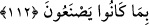

meyvelerini elde ederler. İşte ceza bunların ikisine de gerekir. Semerkandî Tefsîri’nde
böyle geçmektedir.
Âyette şuna da işâret vardır: Kötülük işleyen her nefis, cehennem ve ayrılık ateşiyle
tam olarak azab görür. Hayır işleyen her nefse de cennet nimetleri ve Rahman’a
kavuşma sevabı tam olarak verilir. Dolayısıyla nimet ehli azab görmediği gibi
cehennem ehli de sevaba nâil olamaz. et-Te’vîlâtü’n-Necmiyye’de böyle geçmektedir.
112. Allah, (ibret için) bir ülkeyi örnek verdi: Bu ülke güvenli, huzurlu idi; ona
rızkı her yerden bol bol gelirdi. Sonra onlar Allah’ın nimetlerine karşı nankörlük
ettiler. Allah da onlara, yaptıklarından ötürü açlık ve korku sıkıntısını tattırdı.
“Allah, bir ülkeyi” önceki kavimlerden bir şehir halkının kıssasını “örnek verdi:” el-
Kevâşî’de belirtildiği üzere bu şehir Eyle’dir. Yenbu ile Mısır arasında bir şehirdir.
Burada örnek verilen konu, bu şehir halkının işi ve amelidir. Allah bu şehrin halkını,
özel olarak Mekkeliler için ya da kendilerine nimet verdiği bütün kavimler için örnek
yaptı. Nimet onları azdırdı ve yaptıklarını yaptılar. Allah da onların nimetlerini azaba
çevirdi. Mekke halkı öncelikle onlara dâhildir.
“Bu ülke güvenli,” her türlü korkudan emindi. Kâşifî’nin belirttiğine göre
‘Kayserlerin hücûmundan ve zorbaların saldırısından emniyetteydi.’ “huzurlu” rahat ve
âsûde “idi;” el-Kevâşî’de der ki: Onlar, güzelliğinden dolayı oradan başka bir yere
gitmezlerdi.
“ona rızkı her yerden” kara ve deniz her taraftan “bol bol gelirdi.” yiyecek ve rızkı
çeşitli bölgelerden gelirdi. Bu cümle, ülkenin ilkinden farklı ikinci sıfatıdır. Çünkü rızık
daima yenilendiği halde şehrin güvenli ve huzurlu olması sâbit ve devamlıdır.
“Sonra onlar” şehir halkı “Allah’ın” rızık ve devamlı olarak emniyette olma
“nimetlerine karşı nankörlük ettiler.” Allah’ın nimetlerini hesaba katıp önem vermeyi
terk ederek küfran-ı nimette bulundular.
“__WORD__ kelimesi nimet kelimesinin az sayıdaki çoğunluk için kullanılan çoğuludur. Bu
vezninin tercih edilmesi, az nimete nankörlük bile bu azaba sebep olduğuna göre birçok
nimete nankörlük etmenin azabının ne kadar büyük olacağını bildirmek içindir.
el-Kevâşî’de belirtildiğine göre Eyle halkının ekmekle temizlendikleri/istincâ ettikleri
rivâyet edilmiştir. Fakir (Bursevî) der ki: Ekmek ilahi nimetler arısında asıldır. Bu
yüzden insanoğlunun aslı/atası olan Âdem (a.s.) ziraat yapmakla emrolundu. Kim